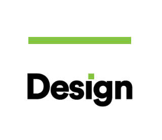
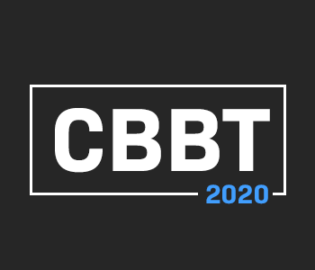
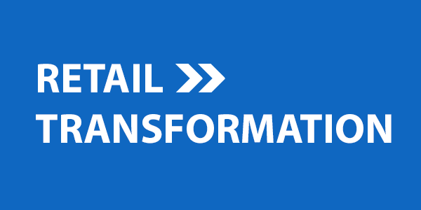
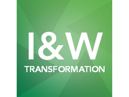
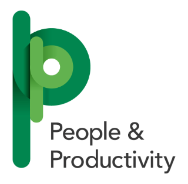

The Group Transformation Team
Group Transformation is building our bank of the future. We are doing this by building a best in class experience, transforming customer journey's and driving change across the Group.
Who are we?
We are composed of 9 teams and have 3 partners.
Chief Technology Office
Purpose:
- - -
Priorities:
- - -
Transforming Change
Purpose:
To transform the Group's change capability by building colleague trust, creating a learning culture and unleashing teams' potential to be inquisitive and experimental - creating an adaptvie organisation that delivers on what matters to our customers every day.
Priorities:
- As part of GSR3, delivering one of the largest agile at scale transformations conducted in the financial services industry worldwide.
- Touching 18,000 colleagues with a key focus on adoption of new ways of working, up-skilling and redployment, recruiting at scale and engaging our colleagues whilst ensuring the Division maintains trust through this significant change.
Design

Purpose:
Design uses compassion, clarity and courage to Help Britain Prosper by fostering a healthy relationship between people and money.
Priorities:
- - -
Chief Data Office
Purpose:
- - -
Priorities:
- - -
Commercial & Business Banking

Purpose:
To unleash our potential to help business to prosper in a digital world. Our team partners the divisional business areas to drive transformation for our future success as we continue to strive to be the Best Bank for customers. CBBT has five values streams: Markets, Lending, Business and Transaction Banking, Business and Commercial Servicing and Relationship Management.
Priorities:
- To continue delivering 'best in class' services to our clients and colleagues.
- Remain focused on delivery within each of our Value Streams.
- Implement and mobilise our new team structures.
- Launch new training offerings for Commercial and Business Banking Transformation Colleagues.
Enterprise
Purpose:
To drive the heart of the trsanformation business for our colleagues and customers. Together we will deliver the most crticial programmes and innovative systems which make up the foundations of the bank of the future.
Priorities:
Our joint priority across the division is to create an environment where:
- We work from a position of knowledge, not assumption. Giving our teams the opportunity to learn and apply the latest thinking and principles to ensure the bank remains relevent today and in the future.
- Our culture fosters collaboration, risk-taking, creativity and innovation
- Governance is simplified, reports are standardised and automated
- Our teams can think, share, challenge and take chances as we continue to transform the bank
Retail Transformation

Purpose:
In Retail Transformation, we partner with the divisions so that together we can build the Bank of the Future. We do this by delivering change and IT services that enable Retail Banking to deliver their strategy and provide compelling propositions and an excellent customer experience.
Priorities:
- Digitising the Bank: Develop seamless end-to-end multi-channel customer journeys; Digital self-service for simple needs; Transform Connect; Enhance partner offerings in Motor, with better self service Enhanced Customer Experience;
- Enhanced Customer Experience: Develop compelling Open Banking propositions; Transform the branch network; Improve support for complex needs;
- Leverage Group Capabilities: Grow mortgage relationship market share; Deliver segmented and personalised value propositions; Leverage enhanced data and insights;
- Ways of Working: Transfrom our way of working
Insurance & Wealth

Purpose:
The Insurance and Wealth Transformation Directorate plays a crucial role in helping the Insurance and Wealth business acheive its vision to become a customer-centric, agile and efficient provider, helping Britain protect today and secure tomorrow.
Priorities:
- - -
COO - Transformation & Tech
Purpose:
Chief Operating Office (COO) - Transformation & Tech is at the heart of Group Transformation, providing services and products that enable Group Transformation teams to build our Bank of the Future.
Priorities:
- Deliver 2020 investment & BAU budget to time, cose, benefits, productivity & strategy
- Strengthen active management and accountability of funding risks and facilitate migration strategies
- Deepen knowlegde and understanding of Cloud technologies across GT and GCIO to support ongoing considerations and delivery of strategy
- Support and help shape GSR4 investment choices
- Improve efficiency and simplicity across GT and GCIO
- Enhance Nerve Centre capability that will facilitate reporting efficiency and continued adoption across GT
- Embed active and enhanced risk management across the supplier base and develop and execute strategy to increase efficiencies
- Embed and drive active positive adoption of Group Risk framework and SMR requirements across COO T&T
Our Partners
Group Transformation is building our bank of the future. We are doing this by building a best in class experience, transforming customer journey's and driving change across the Group.
People & Productivity

Purpose:
COO Business Risk
Purpose:
To be the first line risk team in banking. To help the Group to become the Bank of the Future in a safe and controlled way.
Finance
Purpose:
To be trusted business partners adding value, insight, challenge and control. To deliver a safe and successful Lloyds Banking Group.
1 / 5
The Strategy
A strategy is a high level plan to acheive our goal of Helping Britain Prosper. It acts as a framework for making decisions throughout the Group. There are four elements to our strategy as follows:
Delivering a Leading Customer Experience
We'll meet our customers diverse needs by building on our multi-channel, multi-brand model - creating a simple, seamless, more personalised banking experience online, on mobile, in branch or over the phone.
Some acheivements from last year!
- We are committed to maintaining the UK's number one branch network and customer facing colleagues in branch now spend around 50 per cent of their time addressing customers' complex needs
- We are trialling new branch formats, including a new flagship Bank of Scotland branch and Home by Halifax
- We have continued to develop our digital proposition and our digitally-active customer base has increased again to 16.4 million, of which 10.7 million are active on their mobile banking app; 75 per cent of products are now originated digitally
- We are using our deep understanding of our diverse customer base to deliver tailored propositions such as Club Lloyds and the Halifax Prize Draw
Digitising the Group
We'll use technology to work smarter and make it easier for customers to bank with us. We'll simplify customer and colleague journeys, modernise our data and IT architecture, and make our central support functions more efficient.
Some acheivements from last year!
- Investment in technology remains a key strategic priority for the Group and enables us to improve the experience of our customers and colleagues; technology spend now represents 19 per cent of operating costs
- Having introduced automation for repetitive tasks, we have created over 1 million cumulative hours of colleague capacity and our transformation has covered around 55 per cent of the Group's cost base
- Virtual assistants are currently managing up to 5,000 customer conversations daily, with satisfaction increasing by more than 10 points. Around 25 per cent of queries are handled without being passed to a colleague and we expect this to increase
- In enhancing capabilities and accelerating our transformation, we are working in collaboration with a number of fintechs and we continue to monitor opportunities in this space
Maximising the Group's Capabilities
We'll harness our unique strengths and scale as the UK's only integrated banking and insurance provider - doing more for our customers, helping businesses prosper, and growing sustainably across several target segments.
Some acheivements from last year!
- Open Banking is now available to all digital customers and our unique Single Customer View capability is available to over 5 million customers
- We have exceeded our goal of attracting over 1 million new pension customers, a year ahead of target and we have continued to make progress towards the target of growing open book assets under administration by £50 billion by the end of 2020, with cumulative net growth of £37 billion since 2017
- We launched Schroders Personal Wealth with the ambition of becoming a top three financial planning business by the end of 2023
- Commercial Banking has supported Insurance and Wealth by sourcing £0.6 billion of new long-term assets to support five new bulk annuity transactions
Transforming Ways of Working
We'll make our biggest ever investment in our people, spending 50% more time on training and development to build key skills for the future. We'll bring our best, be more agile, and transform the way we work.
What are some of the things we have in store for 2020?
-
LeadershipWe're launching a new Leadership Apprenticeship, Advanced Development Programme and extending our Resilience Training. We'll train a total of 2,000 Behavioural Champions to embed our values. In addition, we'll introduce a new enhanced Leadership Academy to develop great leaders at every level across the Group.
-
Skills and capabilitiesWe're introducing 10 online learning hubs to build the skills we need to succeed in the future. We're also launching more accelerated development programmes for specialist roles.
-
Engagement and communicationsWe'll keep growing our Hive community and improving two way communication. We'll use colleague stories to increase engagement and introduce new channels to receive news and information.
-
Ways of workingWe'll continue to bring more HR resources onto Workday (including online learning). We'll have 80% of colleagues using more modern software by the end of 2019. And we'll have transformed 14 colleague journeys by the end of 2020.
Some acheivements from last year!
-
Leadership6,190 leaders attented reward virtual bootcamps and trained over 2,400 behavioural experiment champions.
-
Skills and capabilitiesLaunched Your Resilience, a new personal resilience tool for all. Launched new Learning Valued cards, with over 1,700 You vs a Better You recognitions.
-
Engagement and communicationsLaunched learining in Workday, simplified job families, introduced LinkedIn Learning, Launched Ready Now to identify colleagues ready to move to the next stage.
-
Ways of workingMore than 51k items requested from Place2B, 5,000 new connections created by Coffee Club and improved travel and expenses processes with simpler guidance, new meal allowances and no need to pay for hotels yourself.
2 / 5
Job Families
Historically in the Group we’ve used job profiles to manage recruitment, HR and the nature of our roles. Over time the sheer quantity of job profiles meant that many were outdated, others lacked clear accountabilities and required capabilities, and ultimately there was no consistency across the Group.
Enter Job Families
In November 2019, after going through existing job profiles and analysing the wider job market, Job Families were brought in to solve these issues. To simplify and bring consistency to the way jobs are defined, Job Families introduced a flat hierarchy of roles, a single source of accountabilities and capabilities, and a consistent format and language.
Most importantly, it helps us!
- Make informed career decisions by easily identifying which capabilities to develop
- Identify targeted learning that’s relevant to your role
- Understand where your capabilities may be suited to broader opportunities across the Group
Learners of the Future has been restructured to align itself to Job Families and assist in all the above.
How to find your Job Family
- Go to Workday and from the home screen click the top right cloud icon.
- From here you will be able to click "view profile".
- The next page will have a Job details table showing Job Profile and Job Family.
- Clicking onto these will reveal more detail about your Job Family and Job Family Group.
Group Transformations' Job Families
Job Families themselves belong to Groups. In Group Transformation we have 5 Job Family Groups that contain between them
Analytics Job Family Group
-
Analysis & Insight Job FamilyInvolves extraction, transformation and analysis of data from internal and external sources, with the production and distribution of regular, ad-hoc or tactical management of information in order to enhance or progress business driven objectives through value adding and insightful outputs. Provide research outputs ranging from granular data deliverables to aggregate analysis, modelling of this data and / or providing accurate forecasting / advice to drive the development of new change initiatives or products.
-
Applied Sciences Job FamilyThis family is concerned with applying advanced data science and artificial intelligence methods to key business problems and opportunities. Identifying opportunities for advanced analytics across the Group, to build machine learning prototypes and to productionise and run AI products.
Agile Job Family Group
-
Product Ownership & Analysis Job FamilyThis family is concerned with the delivery of a team's product. Tackling business problems to realise customer value through excellence and execution, and stimulating innovation by continiously prioritising customer needs to drive delivery of value.
-
Delivery Project Management Job FamilyThis family plays a key part in the delivery of transformational change across the Group, including planning, risk, issue management and financial control. Different methodologies depending on the type of change being delivered are understood, embraced and advocated. Scale and complexity of delivery ranges from leading cross divisional, complex change through to smaller change initiatives. Focus on end customer outcomes and business objectives is key.
-
Agile Method Job FamilyThis family are advocates of the new ways of working, facilitating change using agile methodology to create business and customer value, and coaching others to adopt this way of working.
Design Job Family Group
-
Enterprise Architecture Job FamilyThis is the description and visualization of the structure of a given area of contemplation, its elements and their collaborations and interrelations links vision, strategy and feasibility, focusing on usability, durability and effectiveness. Defining the technological and architectual vision to support the agile delivery of solutions, whilst ensuring the right outcomes for the Group are delivered from a risk and business strategy perspective.
-
Human Centred Design Job FamilyThis incorporates Service Design, User Experience, Customer Experience and Systems Thinking; and is the activity of planning and organising people, infrastructure, communication and material components of a service, in order to improve its quality and the interaction between the service provider and its customers.
-
Business Design Job FamilyThis family designs a blueprint of the enterprise that provides a common understanding of the organisation and is used to align strategic objectives and tactical demands. Colleages work to shape initiatives with significant design and architecture impacts.
Technology Job Family Group
-
Engineering Job FamilyAll roles within this family work to deliver customer driven solutions and quality software to lead the way in defining the best of new technology offerings. Colleagues do this by implementing the right level of engineering artefacts through Agile testing with an "Automation first" approach.
3 / 5
Your Best
4 / 5
Mandatory Training
5 / 5